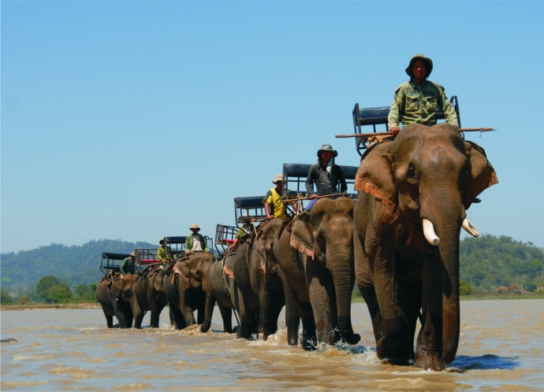

-
Huyền thoại hồ Lắk – Buôn Jun (Đắk Lắk)
Hồ Lắk là một trong những hồ nước ngọt tự nhiên lớn mang vẻ đẹp tự nhiên thơ mộng của núi rừng.Buôn Jun ở thị trấn Liên Sơn của huyện Lắk. tỉnh Đắk Lắk tựa mình bên hồ Lăk thơ mộng, có vẻ đẹp nguyên sơ của buôn làng Tây Nguyên. Nơi đây luôn giữ cho mình những bản sắc truyền thống đã được bảo tồn qua nhiều thế hệ.
-
Nhà rông Kon Klor (Kon Tum)
Nhà rông Kon Klor là nhà rông lớn nhất Kon Tum, đây là một biểu tượng của văn hoá các tộc người ở Tây Nguyên. Nhà rông Kon Klor được xây dựng trên một vị thế rất đẹp, trước mặt là con đường Trần Hưng Đạo thẳng tắp, rộng thênh thang, bên phải là cầu treo xinh đẹp, xung quanh những ruộng mía xanh ngút ngàn.
Nhà rông được thiết kế theo kiểu truyền thống với chất liệu hoàn toàn bằng gỗ, tranh, tre, nứa, lá với những hoa văn, họa tiết rất công phu. Do đó, nhà rông Kon Klor là nơi để du khách khám phá văn hoá của đồng bào nơi đây.
-
Nhà thờ Chánh tòa Kon Tum
Nằm ở nội vi thị xã, nhà thờ gỗ Kontum xây dựng năm 1913, do một linh mục người Pháp tổ chức thi công. Đây là một thiết kế theo phong cách của Phương Tây nhưng có pha trộn thêm một ít kiến trúc của các ngôi nhà sàn ở Tây Nguyên, chính những nét này đã tạo nên sự độc đáo cho ngôi nhà thờ ở đây.
Do có vị trí nằm giữa những cánh rừng xanh bát ngát nên không khí nơi đây cũng rất dễ chịu và thoải mái.
-

Làng voi Nhơn Hòa – Gia Lai
Thuộc xã Nhơn Hòa, huyện Chư Sê, tỉnh Gia Lai, cách thành phố Pleiku khoảng 65km về phía nam, trên quốc lộ 14, Pleiku - BuônMaThuột.
Đến với nơi đây, du khách sẽ được ngồi trên lưng voi, tận hưởng cảm giác lắc lư, bồng bềnh, du khách có dịp thưởng ngoạn không khí trong lành, thuần khiết của núi rừng trên dọc đường đi.
-
Hang động Chư Bluk (Đắk Nông)
Quần thể hang động Chư Bluk ở xã Buôn Choah, huyện Krông Nô, tỉnh Đắk Nông mới được khai thác. Đây là hang động núi lửa dài nhất Đông Nam Á có cảnh quan vẫn còn nguyên sơ do chưa có dấu chân người khai thác.
Du khách khi đến với Chư Bluk sẽ không khỏi ngỡ ngàng bởi vẻ hoang sơ và kỳ bí. Chư Bluk có đến hơn 100 hang động lớn nhỏ, mỗi một hang lại là một cảnh quan kỳ vỹ được tạo nên từ những dòng dung nham phun ngược đã cách đây hàng triệu năm, điều đặc biệt là nó hình thành nhiều nhánh rẽ ở bên trong hang động.